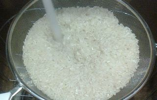
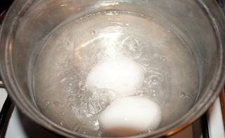
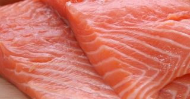
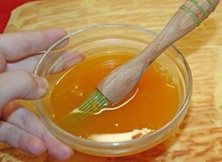

Шаг 1: Подготовим рис.

Первым делом, нужно заняться рисом. Рис перебираем, несколько раз моем под проточной водой при помощи сита. Когда рис будет хорошо промыт, вода будет течь из под него прозрачная. Ставим кастрюлю на огонь, наливаем 250 мл. воды и даём ей закипеть, высыпаем рис и варим до готовности, обычно это занимает минут 20. В процессе варки следует несколько раз аккуратно перемешать крупу. Готовый рис перекладываем на тарелку и оставляем его остывать. Рис должен быть белоснежный, чтобы салат носил своё название не даром. Пучок зелёного лука промываем в холодной воде и мелко нарезаем.
Шаг 2: Подготовим куриные яйца.

Отдельно в кастрюлю наливаем воду и ставим на огонь, опускаем куриные яйца и варим 10 минут. Сливаем воду, ставим кастрюлю под кран и наливаем холодной воды, чтобы покрыло яйца. Даём остынуть яйцам. Остывшие куриные яйца перекладываем на тарелку. Очищаем яйца от скорлупы, отделяем белок от желтка и натираем на мелкой тёрке по отдельности. Перекладываем в отдельные блюдца.
Шаг 3: Подготовим крабовые палочки.
Если у вас крабовые палочки замороженные, следует разморозить их заранее, (или разморозить в микроволновой печи, чтобы останавливать процесс). Режем мелко кубиками и откладывает в сторону на отдельной тарелке.
Шаг 4: Подготовим солёную красную рыбу.

Заранее, берём любую замороженную красную рыбу, достаём из пакета и ставим размораживаться в тёплое место на пару часов. Потом в миску наливаем тёплой воды и размешиваем чайную ложку поваренной соли, выкладываем нашу рыбу в тару. Оставляем её там ещё на пару часов. Так мы ей дадим немного просолиться. За этим достаём, немного отжимаем от воды и мелко нарезаем. Откладываем в отдельную тарелочку.
Шаг 5: Соединяем все ингредиенты вместе.

Берём достаточно глубокую миску и аккуратно смазываем её бока изнутри подсолнечным маслом.
Начинаем укладывать слоями готовые ингредиенты: сначала отправляем немного риса, потом сверху кладём кубики крабовых палочек, посыпаем тёртым желтком, опять идёт отварной рис, нарезанная солёная красная рыба, мелко натёртый белок куриного яйца, порубленный зелёный лук, опять кубики крабовых палочек и белоснежный рис. Делая так, мы должны израсходовать все составляющие. Оставим всего немного желтка яйца для украшения. Между слоями промазываем немного майонезом, салат тогда получится сочным и питательным. Готовим плоскую широкую тарелку и, накрыв ею миску, переворачиваем наше блюдо, чтобы салат оказался в итоге на плоской тарелке аккуратной горкой.